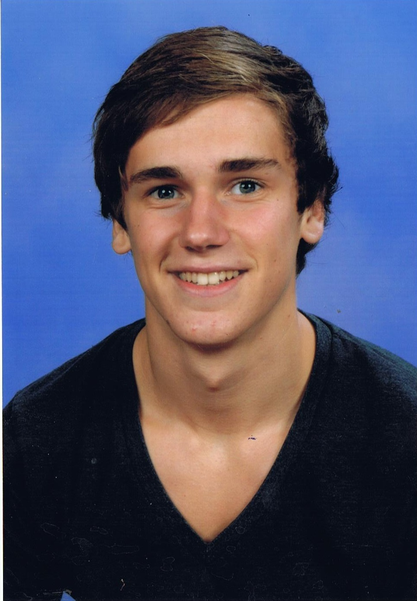

Master student bioinformatics
Internship BSc; September 2018 - Augustus 2019
Identification and validation of SF3B1-associated aberrant splicing events using bioinformatics (R, Python & Bash) and biomedical research (RNA isolation & PCR).
BSc; September 2015 - Augustus 2019
Earned the degree Bachelor of Science (BSc) in Augustus 2019 with a specialisation in biotechnology and a grade point average of 7.5.
Februari 2018 - Augustus 2018
Earned Minor Bioinformatics certificate in Augustus 2018 from Avans Hogeschool Breda with a grade point average of 8.5. The minor contained a project about Semantic Dementia in cooperation with Erasmus MC (Rotterdam) and multiple courses (Python, computational biology, data management, NGS analysis, protein modelling & transcriptomics).
September 2017 - Januari 2018
Finished Minor Bioinformatics at Avans Hogeschool Breda with a grade point average of 6.9. The minor contained a project about taxane extraction, multiple trainings (Fermentation technology, Practical cell cultivation & Applied biochemistry) and multiple courses (Geneticas and physiology of microorganisms & Plant biotechnology).
Course intermediate Python3 (2018, offered by DataCamp)
Course intermediate R (2017, offered by Avans Hogeschool Breda)
Training statistics (2017, offered by Avans Hogeschool Breda)
Student tutor (2016, offered by Avans Hogeschool Breda)
MOOC Biobased Economy (2016, offered by Centre of Expertise Biobased Economy)
Synapses, neurons and brains introduction (2015, offered by Coursera)